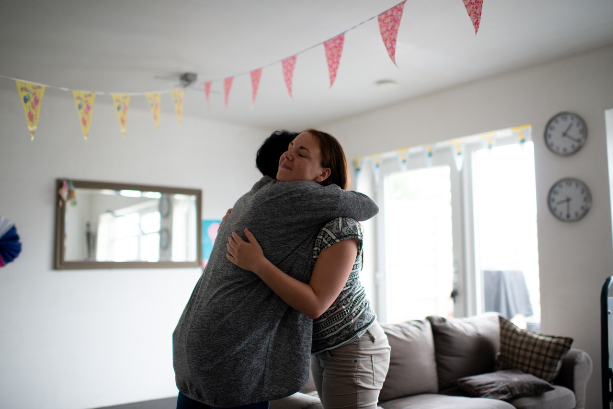
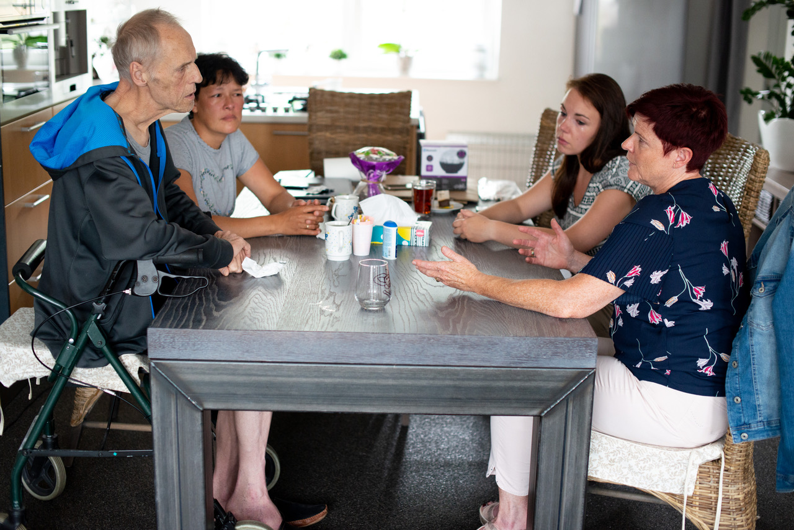
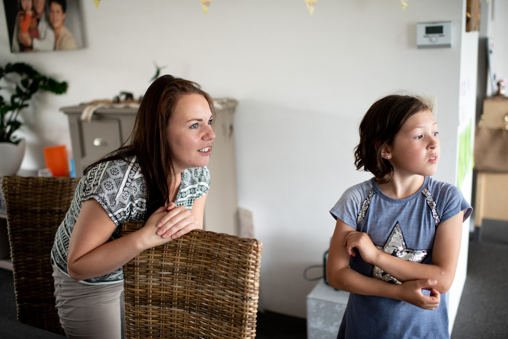

Beluister hun vragen
Kinderen stellen vaak moeilijke vragen waarop een gepast antwoord geven
niet altijd eenvoudig is. Het is belangrijk dat we hun vragen beluisteren.
Probeer na te gaan wat er bij hen leeft en vertrouw erop dat kinderen maar
vragen wat ze op dat moment aankunnen. Wees eerlijk tegen het kind of
de jongere. Geef hen geen valse hoop (“Oma zal wel weer beter worden”),
maar hoop samen met hen op realistische zaken zoals de hoop dat papa
zo goed mogelijk zal verzorgd worden of dat mama zo lang mogelijk zal
thuis blijven. Als je geen antwoord weet op een vraag, vertel dit dan eerlijk
aan het kind of de jongere. Moedig hen aan om zoveel mogelijk vragen te
stellen en zo vaak mogelijk op bezoek te gaan bij de zieke.

Geef ze ruimte
Jongeren hebben een eigen wereld. Gezien jongeren zich net aan het losmaken zijn, kan iemand verliezen hen diep raken. Jongeren zoeken hierin eerder steun bij leeftijdsgenoten of in hun eigen leefwereld (computer, muziek…). Jongeren stellen hun rouwproces vaak uit of stappen in een ouderrol vanuit willen beschermen en zorgen. Al deze reacties zijn normaal en te verwachten bij kinderen in rouw en verdienen aandacht, maar zijn niet zorgwekkend. Wat kunnen dan wel signalen zijn dat jouw kind meer hulp nodig heeft? Zorgwekkende signalen kunnen zijn: alarmerende reacties op alle vlakken die lang duren, onverwachte en niet passende reacties of helemaal niet reageren. Indien men twijfelt, kan men hierover spreken met een vertrouwensfiguur zoals de huisarts of de leerkracht. Het helpt het kind als het gezien wordt in zijn moeilijkheden met de verliessituatie en niet als een 'abnormaal' kind.

Laat hen niet alleen
Kinderen in een verdrietsituatie verliezen vaak meer dan alleen die dierbare
persoon. Ze verliezen ook hun vertrouwde, vanzelfsprekende leefomgeving
van vóór het verlies en soms ook een stuk ouderlijke aandacht gezien je als
ouder zelf aan het rouwen bent. Kinderen hebben niet enkel behoefte aan
troost en hulp, ze willen ook graag zelf hun ouders helpen. Het helpt kinderen als ze deze troost mogen geven en hierin gezien en gewaardeerd
worden (helpen is prima zolang het kind niet te veel de ouderrol op zich
neemt).
.jpg)
.jpg)